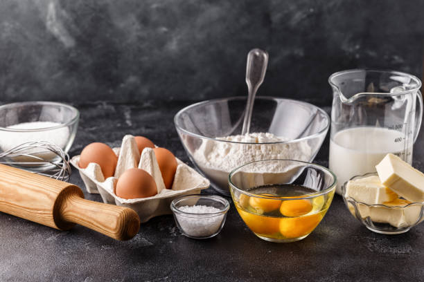

Classic Pancakes
Enjoy these fluffy and delicious pancakes! Follow the step-by-step guide to make the perfect pancakes for breakfast.
Step 1: Gather Ingredients
You'll need flour, eggs, milk, baking powder, sugar, and butter.
Step 2: Mix Ingredients
Whisk together the dry and wet ingredients until smooth.
Step 3: Cook the Pancakes
Pour batter onto a hot pan and cook until golden brown.
Step 4: Serve and Enjoy
Top with syrup and enjoy your homemade pancakes!